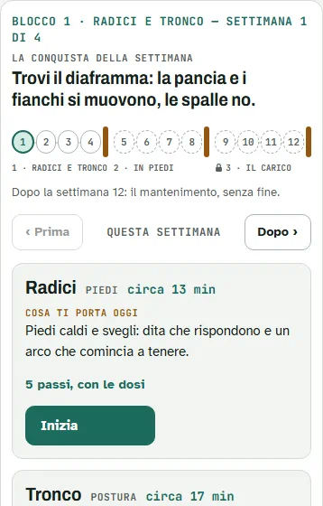

Prima le Radici
Prima le RadiciRadici
i piedi
Tre punti a terra e dita lunghe: se le radici non tengono, il resto compensa.
Le pillole · gratis
Esercizi singoli del metodo, raggruppati per quello che cerchi. Per ognuno: a cosa ti serve, come si fa, che cosa senti, che cosa evitare e una dose di prova per due settimane.
Coach: la dose è del coach. Nostra: l'abbiamo scelta noi, sulle prime settimane del programma.
Con dolore ti fermi. Quando un esercizio chiede attenzione, l'avviso è sulla sua pillola.
Non sai da dove partire? 3 domande ›
I test gratuiti: Respiri al minutoBOLTEquilibrio su una gamba, occhi chiusiTest del collo: 10 secondi a testa suFlessibile o mobile?
Il coach spiega il metodo con un'immagine. Per tirare fuori qualcuno dal fiume ti tieni a un ramo: se il ramo è marcio, cadi anche tu. Il ramo sono le anche e le spalle, il tronco è il respiro, le radici sono i piedi.
i piedi
Tre punti a terra e dita lunghe: se le radici non tengono, il resto compensa.
respiro e postura
Il diaframma che scende e parla col pavimento pelvico, in un tronco che resta dritto.
anche, spalle, collo
Dove stanno le tensioni: prima mobili e stabili, poi ci appendi un peso.
la forza, per ultima
Arriva quando ogni pezzo regge: stabilità prima della forza.
Per chi cerca un momento di calma, la sera prima di dormire o prima di allenarsi. Si fa a terra, piano, col naso: cerchi il respiro che scende verso la pancia e i fianchi.
Per chi corre, sta molte ore in piedi o cerca equilibrio. Da seduto fino a una gamba sola: cerchi tre punti d'appoggio e dita lunghe.
Se hai il diabete e i piedi poco sensibili, non fare questi esercizi scalzo.
Per chi sta molte ore seduto, per chi calcia e per chi fa squat. Un'anca alla volta, il resto fermo: cerchi spazio e controllo, prima seduto a terra, poi in piedi.
Per chi lavora alla scrivania e per chi tiene la guardia alta. Prima si muovono in tutte le direzioni, piano; poi il collo lavora a terra, contro gravità.
Per la presa, i pugni e il corpo libero. Prima il controllo, poi il peso sulle mani, poi gli allungamenti.
La base per correre e sollevare. Cerchi un tronco che resta fermo mentre gambe e braccia lavorano, a terra e poi in piedi.
Non riesco a caricare le pillole: controlla la connessione e ricarica la pagina.
Qui hai 24 pillole su 69 schede. Nel Quaderno le trovi tutte, con «Di più»: perché si fa, la dose che sale, le parole del coach. Ci sono interi gruppi che qui non vedi: mobilità in piedi, spalle e scapole, quadrupedia. E soprattutto l'ordine: 12 settimane, che cosa fare oggi, quando salire.
| Che cosa | Gratis | Con il codice |
|---|---|---|
| Esercizi | 24 pillole: figura animata, a cosa ti serve, come, senti, evita | Tutte le schede, con «Di più»: perché, dose, parole del coach |
| Routine | 6 routine da 5 minuti, una per struttura | Le sessioni del programma e le sessioni complete, col player |
| Dose | Una dose di prova per due settimane | La progressione in 12 settimane e le prove di fine blocco |
| Test | Respiri al minuto, BOLT, equilibrio, collo, flessibile o mobile | Tutti i test, il diario, il «prima e dopo» |
| Percorso | «Da dove parto?» e una sessione tipo per percorso | Il tuo percorso, adattato in videochiamata |
| Persona | — | Videochiamate, controlli, chat |
